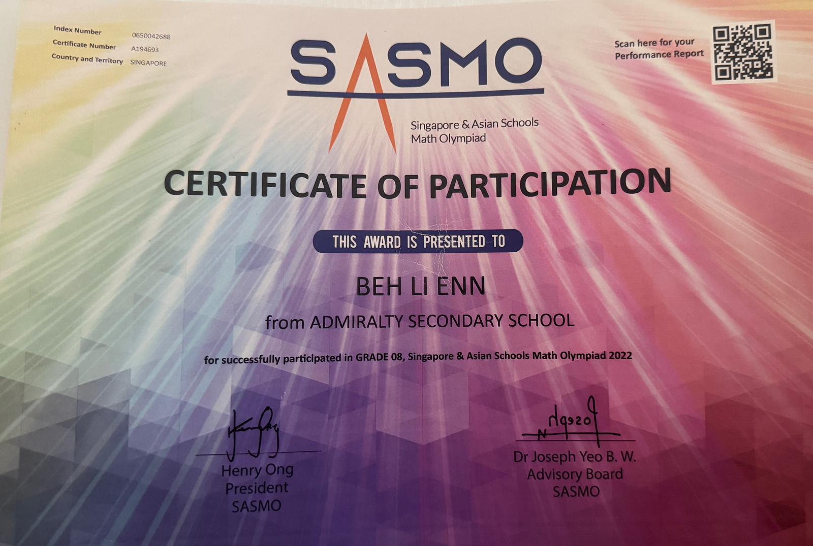
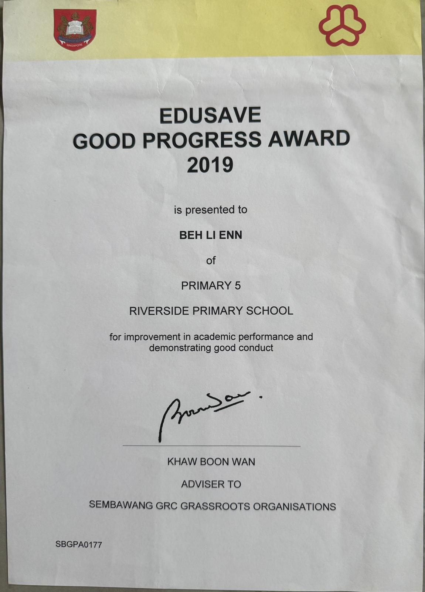
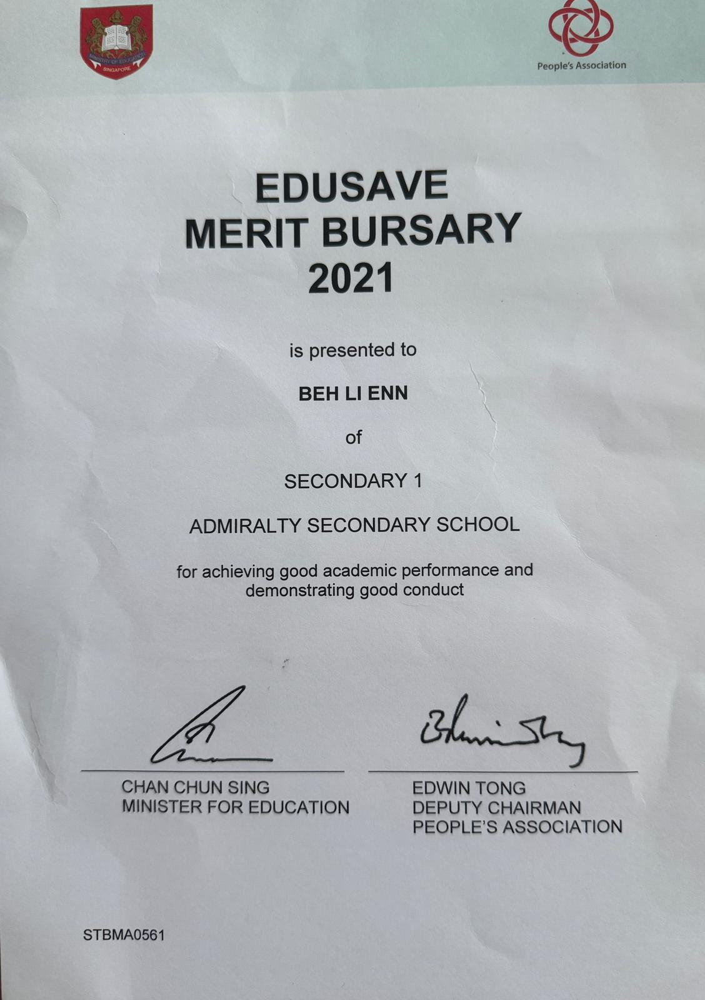
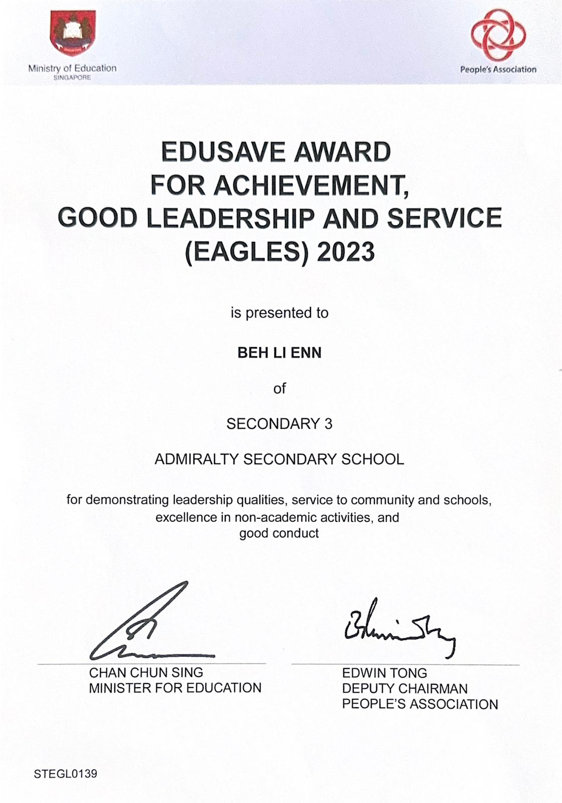
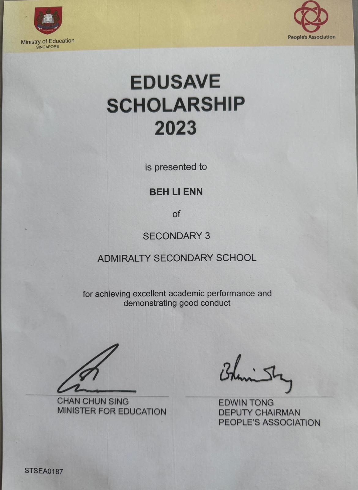

Certificates






I am a Year 1 Student in Ngee Ann Polytechnic. Currently pursuing a diploma in Hotel & Leisure Facilities Management. Welcome to my portfolio.
View My WorkHello, I am Li Enn, a 17-year-old student at Ngee Ann Polytechnic, currently pursuing a Diploma in Hotel & Leisure Facilities Management. I am self motivated and independent learner, I prefer to work through challanges on my own first before seeking for help. In my free time, I enjoy cooking and baking, and I have even learned to prepare my favourite dish, Penang assam laksa.
Yi Fan Engineering | 2024 - Present
Ngee Ann Polytechnic | 2025 - 2028
Relevant Modules: Hospitality Management, Mechanical Facilities, Electricial Facilities, Financial Accounting
Admiralty Secondary School | 2024
Date: April 2023
During the Guzheng SYF, I represented my school as part of the ensemble. I remember preparing for this performance took months of practice and close coordinarion with group members. The intensive preparation developed my discipline and perseverance under pressure. This experience strengthened my collaborative skills and also deepened my appreciation for traditional music.
Date: May 2025
During DEX week, we were required to design a prototype adressing food waste in Singapore. We had only one day to complete the entire process and present our idea. We designed a dustbin fertiliser which turn leftover food into natural fertiliser. It was memorable and taught me the importance of teamwork and staying calm under pressure.
Date: Oct 2025
I assisted in delivering meals to households in need. We are required to collect packed meals at Bukit Gombak, plan routes independently and navigate to multiple addresses. Through this experience, I strengthened my sense of responsibility, improved my ability to work independently in unfamiliar areas and gained a deeper understanding of community needs.
I'd love to hear from you regarding opportunities or collaborations.
Email: behlienn1128@gmail.com
LinkedIn: www.linkedin.com/in/li-enn-beh-617055318
Send Me an Email Click to Download My CV